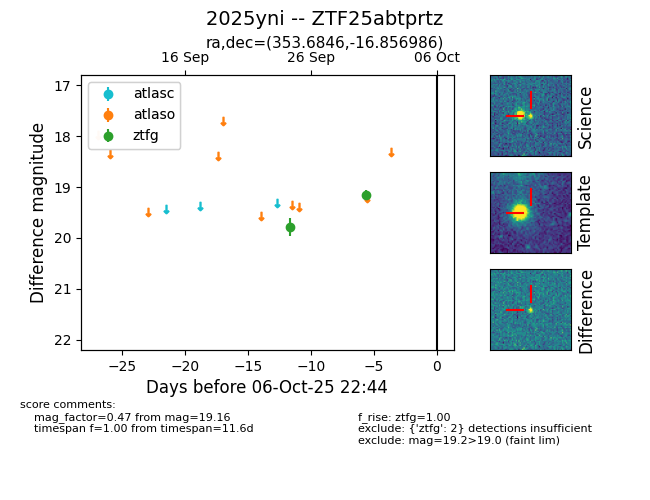

FINK: ZTF25abtprtz
Lasair: ZTF25abtprtz
ALeRCE: ZTF25abtprtz
TNS: 2025yni
YSE: 2025yni
ZTF25abtprtz (ztf,fink)
2025yni (tns,yse)
equatorial (ra, dec) = (353.6846,-16.85699)
galactic (l, b) = (59.0473,-69.50781)

last ztfg=19.16
2 ztfg detections